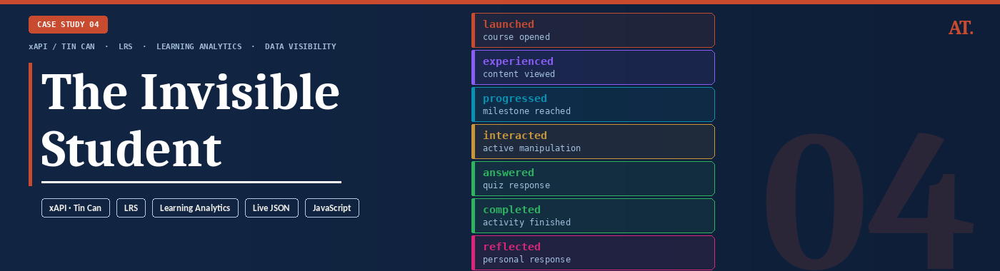
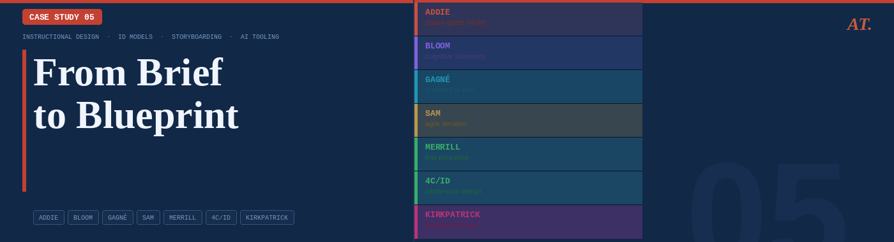

Work that shows
how I think
Five projects that demonstrate a different dimension of technical instructional design: AI integration, systems thinking, automation engineering, learning analytics, and ID model application.

When the Course Knows Your Name
The Problem
Standard eLearning treats every learner identically. Generic narration, static content, one-size-fits-all delivery. For a global technology organization deploying training to thousands of employees across regions, this created low engagement and a fundamental disconnect — the course didn't know who it was talking to.
The Approach
I designed and engineered a personalized learning experience using Articulate Storyline as the delivery layer — but extended far beyond what Storyline is typically used for. Using JavaScript embedded in Storyline, I built API calls that fetched learner data directly from the enterprise LMS at course launch. This data — including the learner's name — was passed to the Murf AI voice system, which dynamically generated a personalized audio welcome message in real time. Each learner heard their own name spoken by a natural-sounding AI voice the moment the course launched.
The Outcome
Demonstrated a scalable model for AI-personalized learning without rebuilding the LMS or requiring a custom platform. Proved that LMS learner data can be surfaced dynamically inside Storyline. Opened a pathway for future personalization based on learner role, region, or performance data.
This project challenged the assumption that eLearning personalization requires expensive custom infrastructure. It can be done with the tools most L&D teams already have.
The ability to think beyond the authoring tool — treating Storyline as a front-end layer while connecting to external systems via APIs. This is the gap between an instructional designer and a learning experience technologist.

Building the Engine, Not Just the Car
The Problem
A global L&D team producing dozens of courses per year was rebuilding the same interactions from scratch each time. This wasted development hours, created visual inconsistency across the course library, and made quality control a constant challenge. The team needed a way to scale output without scaling headcount.
The Approach
I designed a comprehensive Storyline template system from the ground up. The process began in PowerPoint — creating a visual design language and interaction blueprint reviewable by stakeholders before a single Storyline slide was built. This reduced revision cycles significantly. Once approved, I converted designs into fully functional Storyline master templates: reusable slide layouts, pre-built interaction patterns (tabs, accordions, drag-and-drop, branching), and JavaScript-enhanced components for logic that Storyline's native triggers couldn't handle.
The Outcome
Reduced per-course development time significantly by eliminating rebuild cycles. Ensured visual and functional consistency across all courses in the library. Lowered the technical barrier for less experienced developers. Created a reusable asset that continued delivering value long after the initial build.
The template system didn't just speed up one project — it fundamentally changed how the team operated.
Systems thinking applied to L&D — building infrastructure that multiplies team capacity, not just completing individual tasks. This is the difference between a developer who builds courses and an architect who builds systems.

From Manual to Automated —
Rethinking Localization
The Problem
Delivering multilingual training across a global organisation's teams meant manually re-editing videos for every language version — re-timing narration, re-syncing subtitles, re-exporting from multiple tools. For a large course library spanning multiple languages, this was a significant, repetitive time cost that scaled badly.
The Approach
I designed and built an automated video localization workflow using FFmpeg — an open-source command-line tool for video processing — scripted to handle the repetitive transformation tasks that editors were doing manually. The workflow extracted video and audio components from Storyline-published outputs, processed localized audio tracks (resizing, syncing, mixing), merged new audio with existing video, and applied subtitle overlays — all through scripted automation executable with a single command per language.
The Outcome
Eliminated hours of manual editing per language version. Created a repeatable, documented workflow usable by team members without video editing expertise. Made rapid localization into new languages operationally feasible. Reduced human error in timing and sync that routinely occurred during manual editing.
What previously took a skilled editor several hours per language became a script that anyone could run.
Engineering mindset applied to L&D operations — identifying where automation can eliminate friction, then building the solution. Most instructional designers accept manual workflows. I look for where a script should be doing the work instead.

The Invisible Student
The Problem
Most eLearning deployments track only two things: did the learner complete the course, and did they pass. Every decision in between — what they clicked, where they hesitated, which branches they chose, how long they spent on each interaction — disappears. Learners are effectively invisible inside the LMS, and L&D teams make curriculum decisions with almost no behavioural data to support them.
The Approach
I built a live xAPI stream visualiser that makes learner behaviour visible in real time. Step through a real course interaction and watch every action — a click, a drag, a choice, a completion — generate a structured xAPI statement instantly, exactly as it would appear inside a Learning Record Store. Each statement is displayed as live JSON with its actor, verb, object, and result fields populated, showing precisely what data is captured and how it is structured for analysis.
The Outcome
A working demonstration that closes the gap between "we use xAPI" and understanding what xAPI actually produces. Stakeholders can see the data layer behind a course for the first time — not as a concept, but as a live feed. The tool makes the case for richer analytics instrumentation by showing exactly what is being lost when courses only report pass/fail.
Most L&D teams know xAPI exists. Very few have seen what it actually generates. This makes it impossible to ignore.
Data literacy applied to learning design — understanding the full instrumentation layer of a course, not just the authoring layer. The ability to show stakeholders what their data infrastructure is — and isn't — capturing is a rare and valuable capability in L&D.

AI Storyboard Converter
The Problem
Storyboarding is where instructional design decisions are made — but most L&D teams produce storyboards that look the same regardless of the ID model they claim to follow. ADDIE, Bloom, and Gagné produce structurally identical decks. The model becomes a label rather than a design decision. The result is content that doesn't reflect the learning science it claims to use.
The Approach
I built a storyboard generator that takes an ID model seriously as a structural constraint, not a theoretical overlay. For 4 course topics and 7 ID models — ADDIE, Bloom's Taxonomy, Gagné's 9 Events, SAM, Merrill's First Principles, 4C/ID, and Kirkpatrick — I hand-authored 28 complete storyboards, each genuinely different in screen sequence, screen type logic, phase mapping, and design rationale. Every screen contains a narration script, visual and layout specification, interaction type, estimated duration, and an ID design note explaining the pedagogical decision behind it.
The Outcome
A working tool that demonstrates deep familiarity with the practical application of 7 ID frameworks — not as concepts to describe but as structural constraints that visibly change how a course is designed. The Cloudflare Worker proxy is already deployed and ready to switch to live Claude API generation the moment API credits are added, at which point any topic and any model becomes generatable in seconds.
Most portfolios describe ID models. This one applies them — 28 times, with a different structural output each time. That is the difference.
Instructional design as engineering — translating theoretical ID frameworks into concrete design rules that produce measurably different learning artefacts. Combined with the ability to build the tooling that makes that process scalable and explorable for any stakeholder.